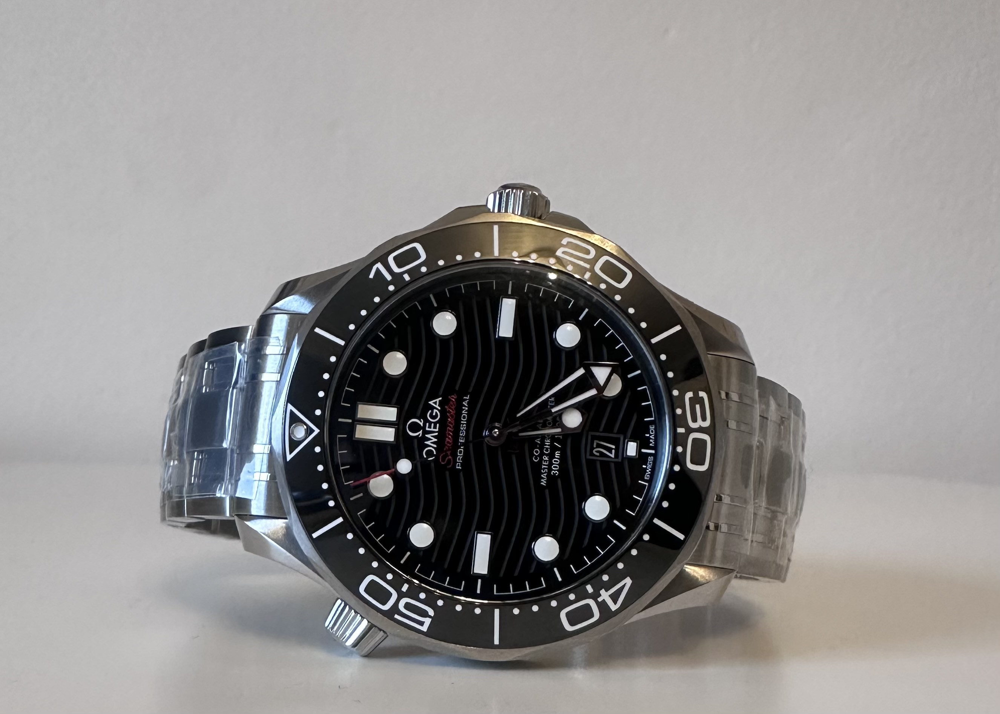
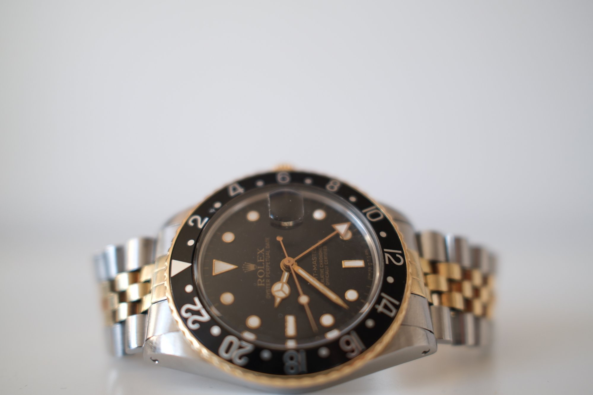
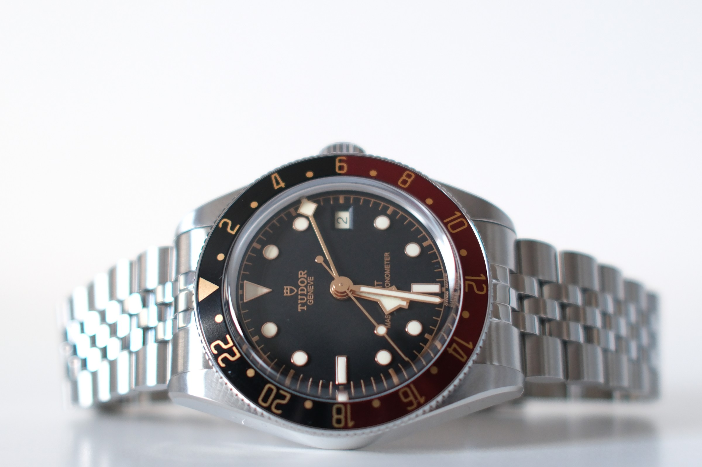
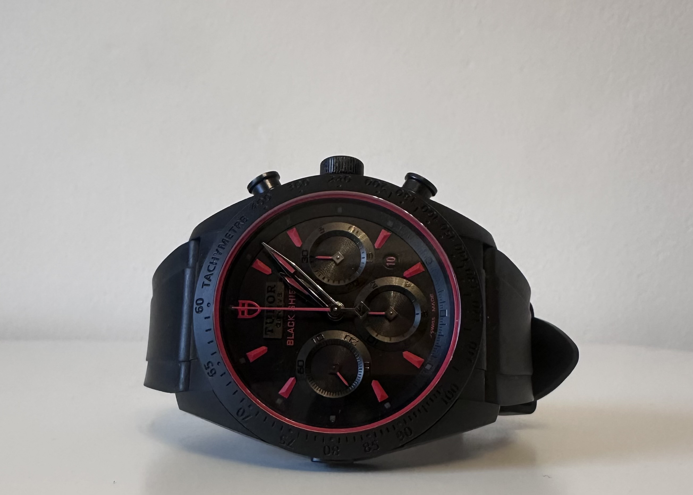
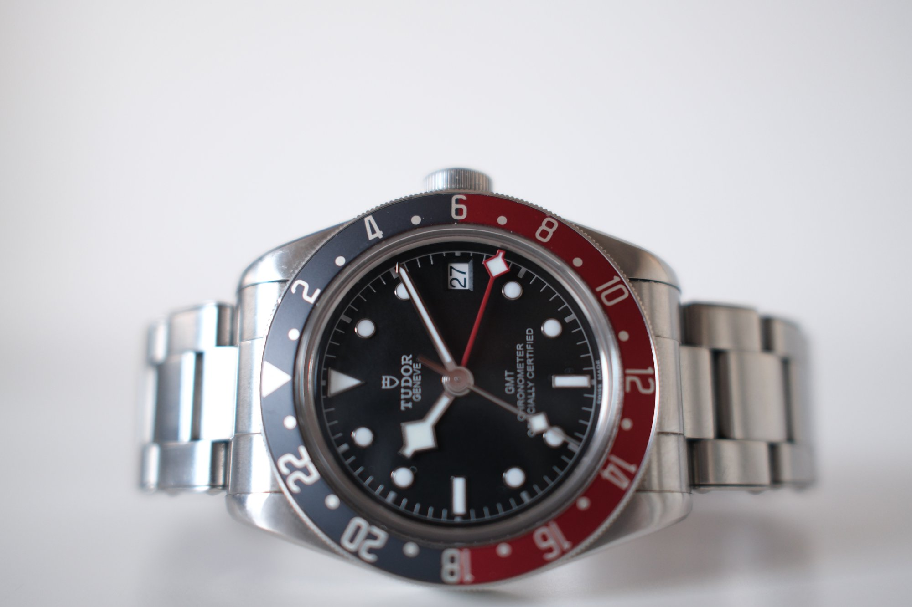

Lager · 9 ure
Ure på lager
Alle ure der er tilgængelige lige nu. Vil du se et? Skriv til os — vi svarer personligt.

Daytona
DKK 99.995
Rolex Daytona ref. 16523 i tofarvet udførelse med hvid skive, tre kronograftællere og tachymeterskala på lynetten. Uret er monteret på en tofarvet lænke. T-serie fra 1996-1997. Standen er vurderet til 70 %.

Speedmaster Reduced
DKK 22.495
Omega Speedmaster Reduced fra 1999 med sort skive, tre kronograftællere og sort tachymeterlynette. Uret er monteret på en sort læderrem med lyse syninger og har en stålkasse. Standen er vurderet til 80 %.

Explorer II
DKK 45.995
Rolex Explorer II ref. 16570 med sort skive, lysende timemarkeringer og rød GMT-viser. Den faste stållunette har 24-timersskala, og uret er monteret på stållænke. Datoen vises ved klokken 3 under forstørrelsesglasset. Standen er vurderet til 85 %.

Speedmaster Moonwatch
DKK 49.500
En ikonisk Omega Speedmaster Moonwatch Professional med elegant hvidlakeret skive, sorte kontrastdetaljer og klassisk stålkonstruktion. Modellen viderefører det legendariske Moonwatch-design, der har været en del af Omegas historie inden for rumfart, og kombinerer vintage-inspirerede detaljer med det moderne Co-Axial Master Chronometer-kaliber 3861. Et tidløst og karakterfuldt ur, der forener historisk arv, teknisk præcision og et raffineret udtryk.

Seamaster Diver 300M, sort
DKK 36.995
Omega Seamaster Diver 300M fra 2026 med sort bølgemønstret skive, sort lynette og stållænke. De lyse timemarkeringer, skeletviserne og de røde detaljer giver skiven tydelig kontrast. Det klassiske sorte og stålblanke udtryk gør modellen nem at bruge til både hverdag og mere formelle anledninger. Leveres som fuldt sæt med boks, yderboks, manual og papirer. Uret er fabriksnyt.

GMT-Master
DKK 67.995
Rolex GMT-Master i stål og guld med sort skive, guldfarvede visere og timemarkeringer. Den sorte drejelige lynette har 24-timersskala, som bruges sammen med GMT-viseren til at aflæse en anden tidszone. Uret er monteret på en tofarvet Jubilee-lænke. Datoen vises ved klokken tre under den karakteristiske datolup.

Black Bay 58 GMT
DKK 32.495
Tudor Black Bay 58 GMT fra 2026 med sort skive, gyldne detaljer og sort og bordeauxrød 24-timerslynette. Uret har en 39 mm stålkasse og femleddet stållænke med T-fit-lås. GMT-funktionen gør det muligt at aflæse flere tidszoner. Dette eksemplar er ubrugt og leveres med boks og papirer som vist på billederne.

Fastrider Black Shield
DKK 21.995
Tudor Fastrider Black Shield fra 2022 med mat sort keramisk kasse, sort skive og røde detaljer. Kronografens tre tællere og den faste tachymeterlynette understreger det motorsportsinspirerede design. Den sorte gummirem holder udtrykket enkelt og sporty, mens de røde markeringer giver uret kant.

Black Bay GMT Pepsi
DKK 19.500
Tudor Black Bay GMT med sort skive, lyse timemarkeringer og rød GMT-viser. Den drejelige blå og bordeauxrøde lynette har 24-timersskala og giver modellen sit karakteristiske Pepsi-udtryk. Uret er monteret på en treleddet stållænke og har datovisning ved klokken tre. GMT-funktionen gør det muligt at aflæse flere tidszoner.